How to install
This is the step by step guide, here is the faster guide.
1
Unzip the folder file that you downloaded.
You can use a program like Winrar or 7-Zip for this.
Windows itself should also be able to open the file easily.
Drag the folders (Tools and toolsmod) to an other folder.
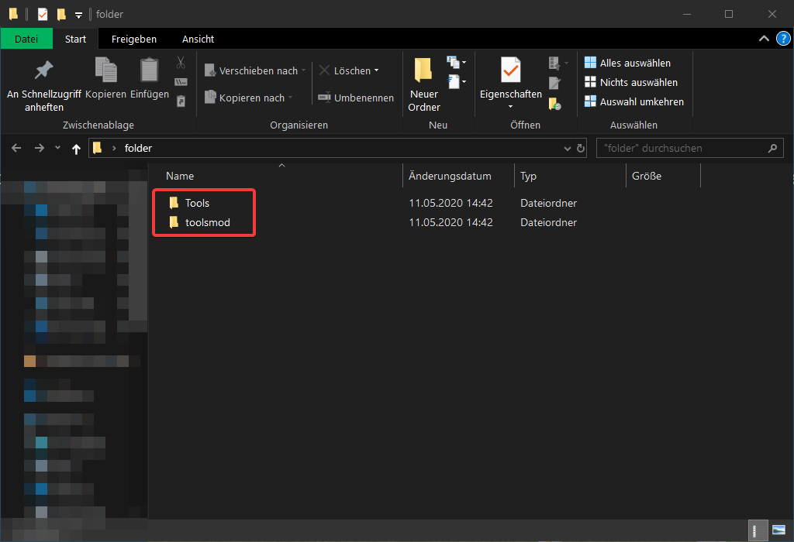2
Open your .minecraft folder.
An easy way to get there is by opening your normal Minecraft game.
Go inside: Options => Resource Packs and click on Open resource pack folder.
Move one folder up and there are you.
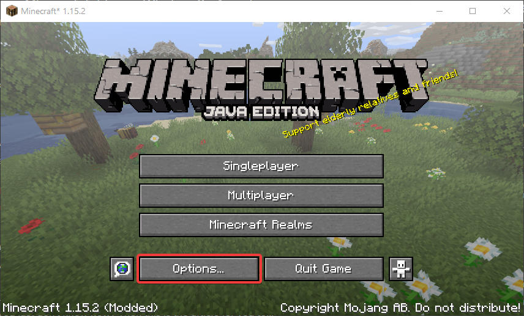 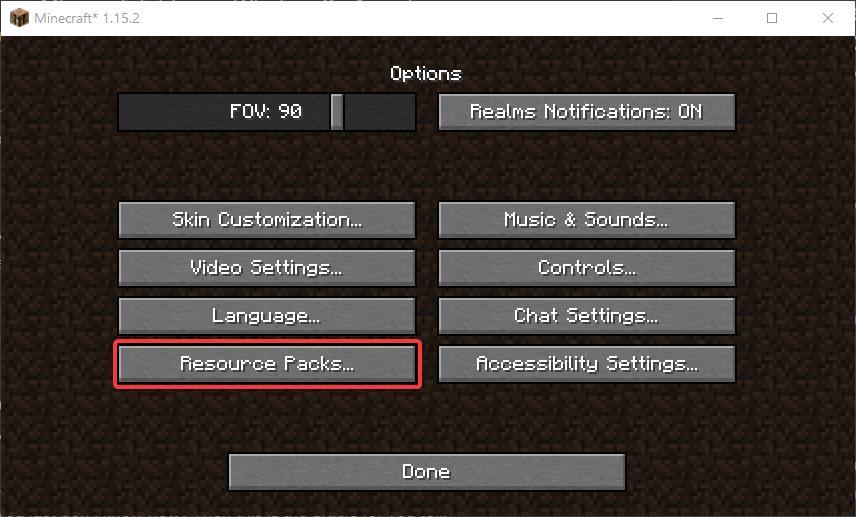 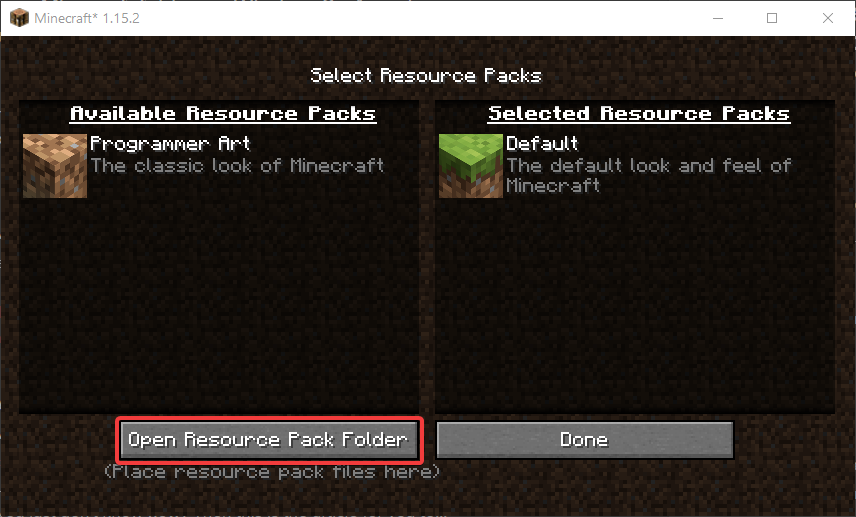 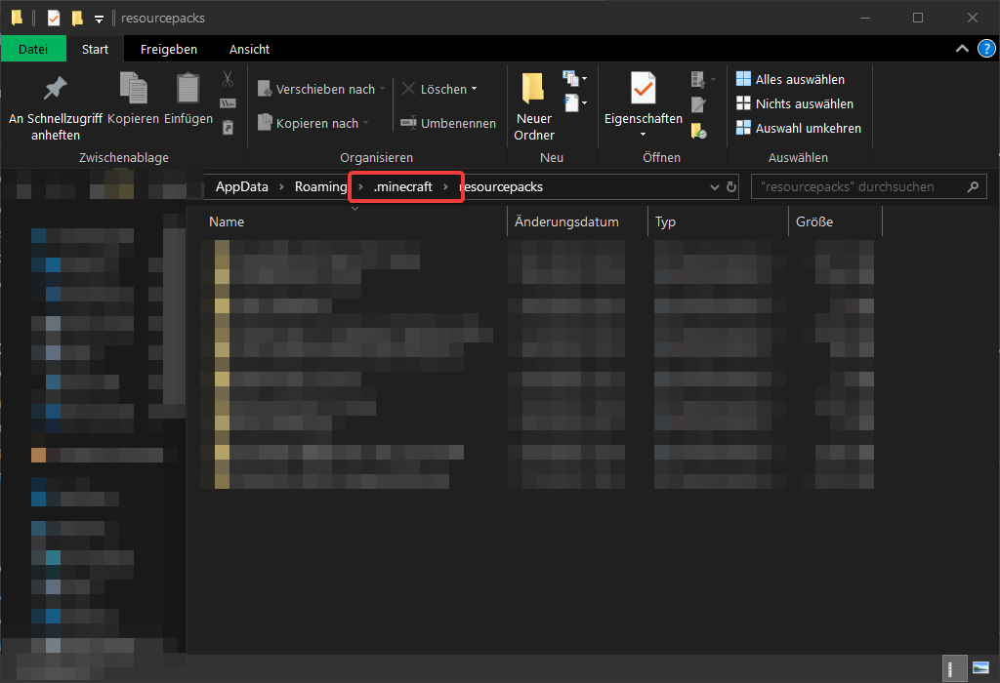3
Copy the folder toolsmod to your minecraft-folder.
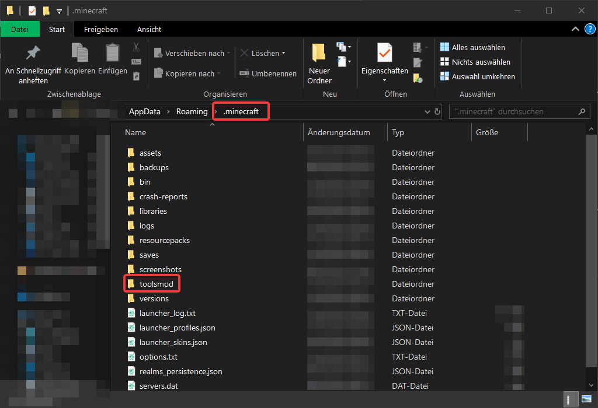4
Go into the versions folder.
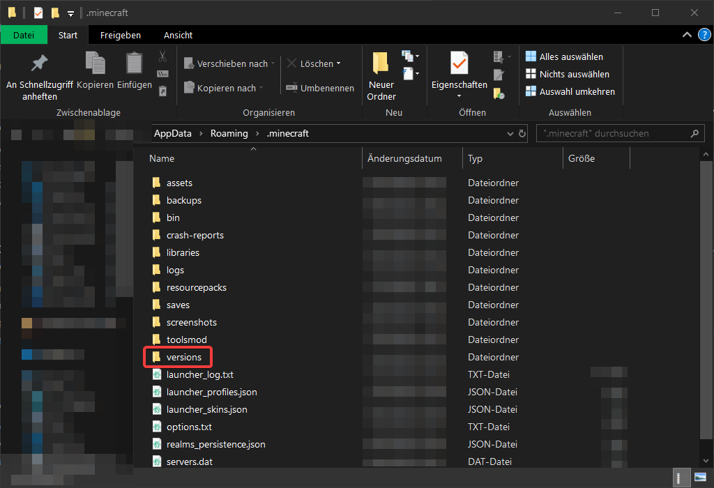5
Copy the Tools folder there.
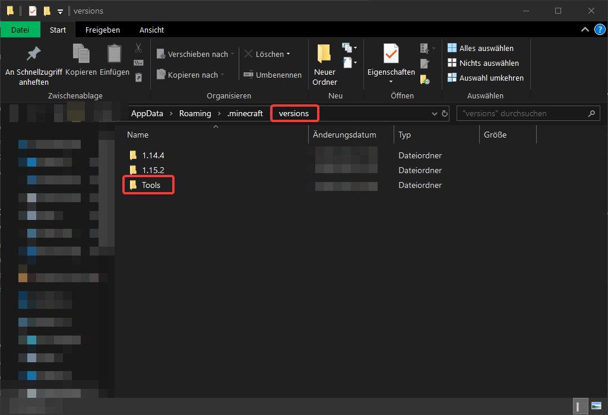6
Start your launcher and go to Installations.
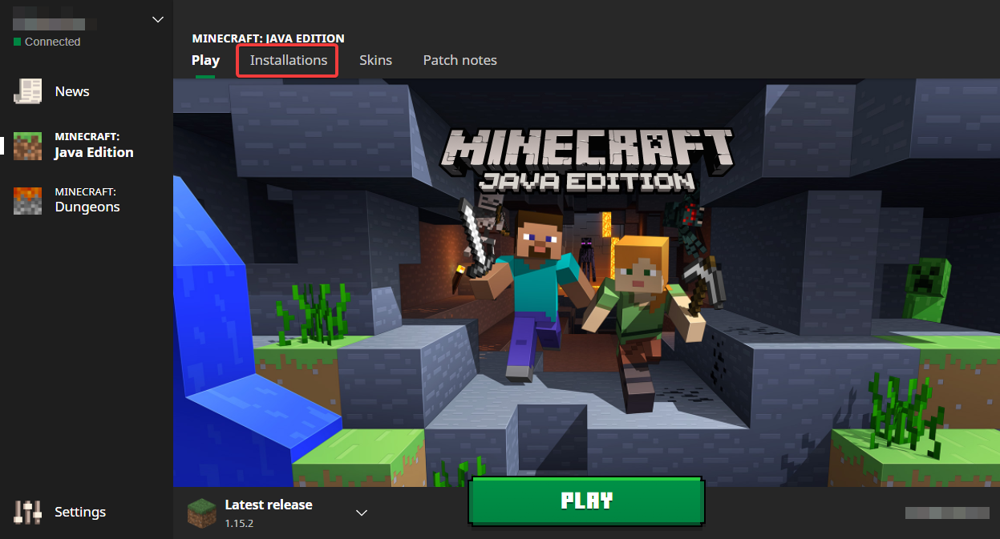7
Click on New... to create a new profile for your mod.
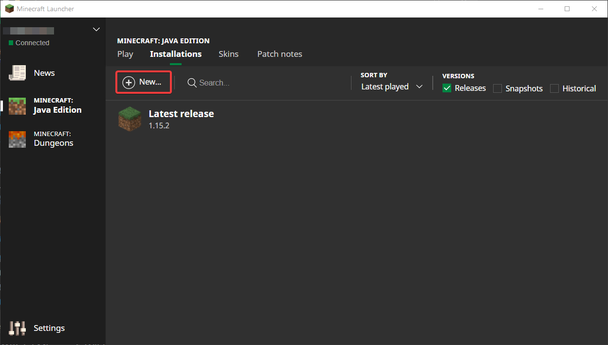8
Set your settings as you like, but as the version select Tools.
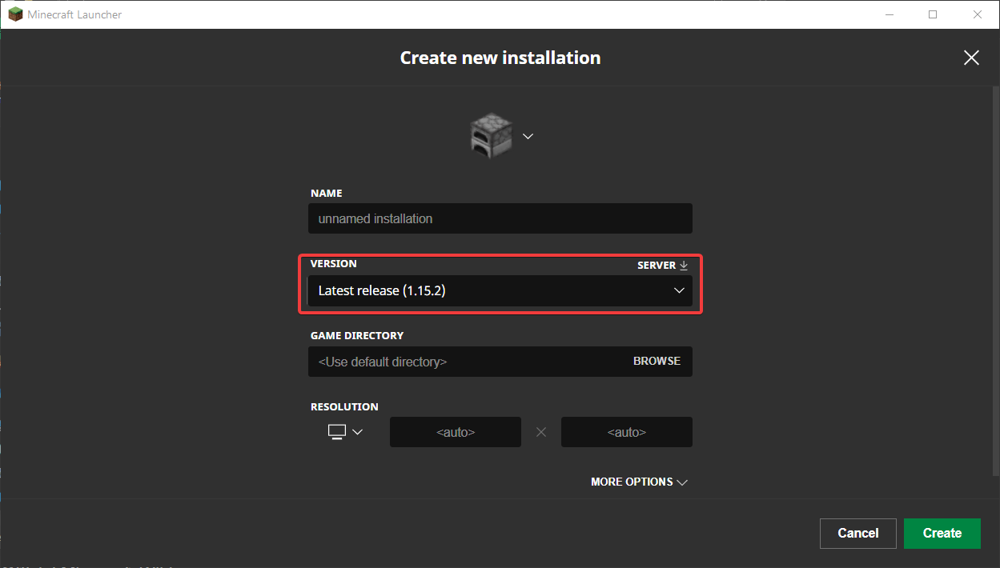 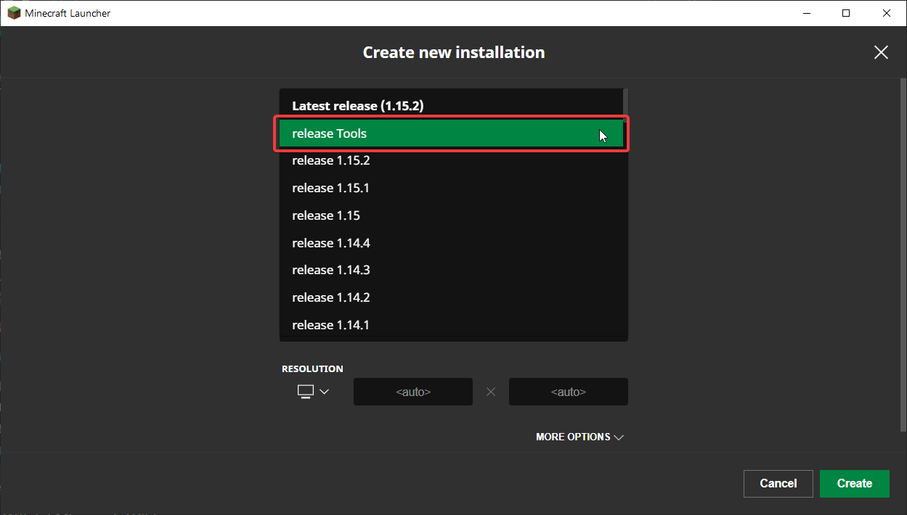9
In the main launcher, select the Tools Mod-version.
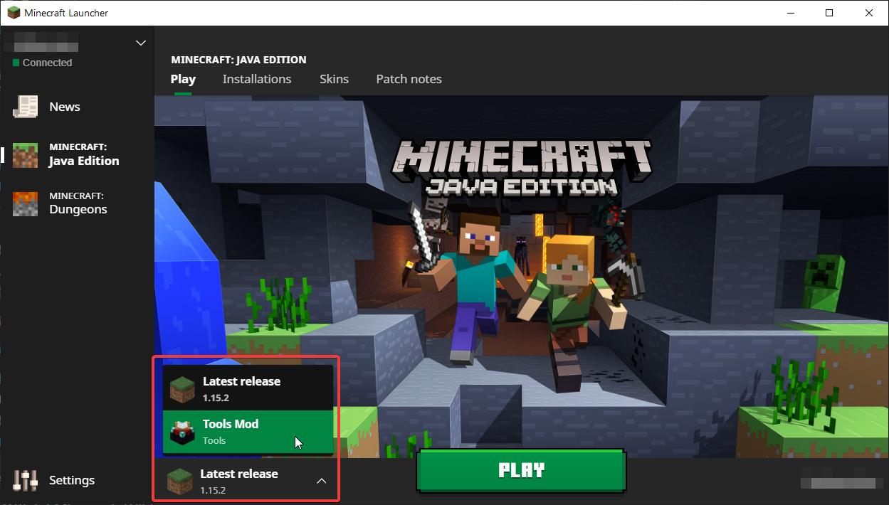10
Start your game and you should be using the tools-mod.
If anything didn't go es expected, retrace your steps.
If that doesn't help, consider requesting support.
Fast guide
This is the step by step guide, here is the faster guide.
1
Unzip the folder.
2
Open your .minecraft folder and place the toolsmod folder there.
3
Copy the folder Tools into the versions folder.
4
Create a new installation-profile in your Launcher.
As version select Tools.
5
Start your game and you should be using the tools-mod.
If anything didn't go es expected, retrace your steps.
If that didn't helped, use the step-by-step guide.